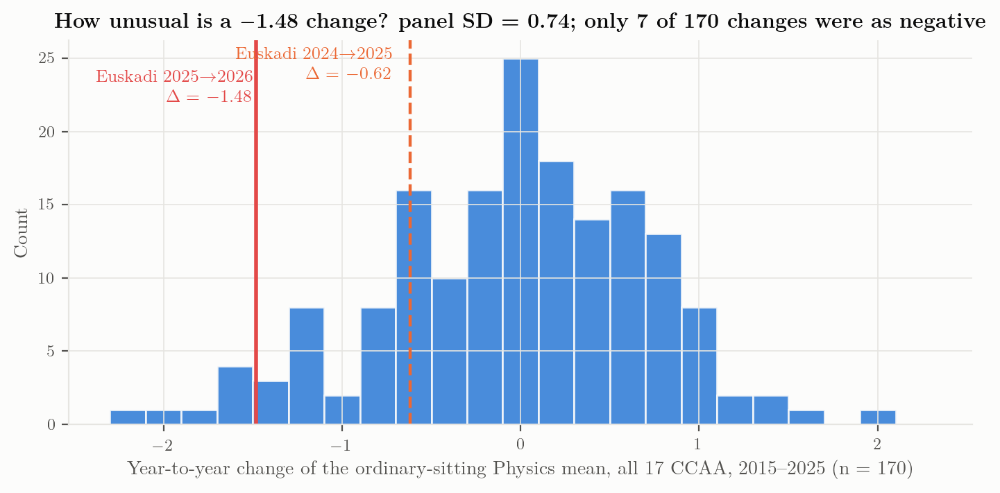

Euskadi 2010–2026: the series and the break
Level, pass rate and regimes of the Physics exam at UPV/EHU
The consolidated series
The Euskadi Physics series is spliced from three sources: the EHU annual reports for 2010–2022 (all Physics takers, both phases) (Universidad del País Vasco / Euskal Herriko Unibertsitatea, 2025), the Ministry EPAU cube for 2023–2025 (specific/admission phase, which is where Física sits since 2017 — the two agree to ±0.02 on the overlap 2017–2022) (Ministerio de Ciencia, Innovación y Universidades (SIIU), 2026), and the EHU presentation of 6 July 2026 for the last point (Euskal Herriko Unibertsitatea, 2026). The splice is validated in Chapter 10.

L1 and L2 are the two LOMLOE papers, keyed beneath. COVID is two sittings and one model: the darker tint is 2020 and 2021, both set under the relief measures — 2021 is the highest mean in the series, 7.69 — and the lighter one the four-of-eight paper they forced, which was then kept through 2024. The grey line is the Ministry cube for all seventeen communities and stops at 2025, because the 2026 cube is not published until June 2027. The green marks are this study’s own cross-section of the nine communities that have published a 2026 result — a different population, and drawn detached for that reason. The two arrows on the right are changes, not levels, and both leave the same point, Euskadi’s own 2025 mean of 5.47. The blue arrow is Euskadi’s own change to 3.99, \(-1.48\). The green arrow is the change of the nine-community field, \(+0.17\), drawn from that same origin so that its head at 5.64 reads as where Física would have ended had it moved with the field. The bracket between the two heads is therefore the Basque-specific component, \(-1.65\), exactly. The distance between the two 2026 levels is 1.87 and is not that component, because the two series did not start level in 2025 (5.47 against 5.69). The field is the mean of the nine including Euskadi, which is the conservative reading; against the eight others alone the component would be \(-1.86\). The three values are the total, common and basque_specific terms of data/analysis/decomposition.json, computed by scripts/21_decay_decomposition.py.
data/analysis/euskadi_fisica_series_2010_2026.csv.
| Year | Enrolled | Presented | Passed | Pass % | Mean | Spain mean | Gap vs Spain | Δ mean | Source |
|---|---|---|---|---|---|---|---|---|---|
| 2010 | 2 504 | 2 108 | 975 | 46.3 | 4.45 | — | — | EHU informe (all phases) | |
| 2011 | 2 620 | 2 610 | 1 294 | 49.6 | 4.44 | — | — | -0.01 | EHU informe (all phases) |
| 2012 | 2 362 | 2 056 | 1 579 | 76.8 | 6.49 | — | — | +2.05 | EHU informe (all phases) |
| 2013 | 2 457 | 2 203 | 1 658 | 75.3 | 6.16 | — | — | -0.33 | EHU informe (all phases) |
| 2014 | 2 495 | 2 253 | 1 485 | 65.9 | 5.68 | — | — | -0.48 | EHU informe (all phases) |
| 2015 | 2 459 | 2 179 | 1 348 | 61.9 | 5.45 | 5.83 | -0.38 | -0.23 | EHU informe (all phases) |
| 2016 | 2 342 | 2 082 | 1 511 | 72.6 | 6.16 | 5.68 | 0.48 | +0.71 | EHU informe (all phases) |
| 2017 | 2 445 | 1 784 | 1 197 | 67.1 | 5.90 | 5.76 | 0.14 | -0.26 | EHU informe (all phases) |
| 2018 | 2 575 | 1 734 | 1 229 | 70.9 | 6.16 | 5.76 | 0.40 | +0.26 | EHU informe (all phases) |
| 2019 | 2 532 | 1 654 | 1 100 | 66.5 | 5.89 | 5.60 | 0.29 | -0.27 | EHU informe (all phases) |
| 2020 | 2 548 | 1 631 | 1 227 | 75.2 | 6.45 | 6.37 | 0.08 | +0.56 | EHU informe (all phases) |
| 2021 | 2 355 | 1 765 | 1 581 | 89.6 | 7.69 | 6.64 | 1.05 | +1.24 | EHU informe (all phases) |
| 2022 | 2 320 | 1 742 | 1 208 | 69.3 | 6.06 | 6.11 | -0.05 | -1.63 | EHU informe (all phases) |
| 2023 | 2 429 | 1 830 | 1 294 | 70.7 | 6.30 | 6.18 | 0.12 | +0.24 | Ministry EPAU (specific phase) |
| 2024 | 2 341 | 1 788 | 1 305 | 73.0 | 6.09 | 6.15 | -0.06 | -0.21 | Ministry EPAU (specific phase) |
| 2025 | 2 597 | 2 189 | 1 364 | 62.3 | 5.47 | 5.65 | -0.18 | -0.62 | Ministry EPAU (specific phase) |
| 2026 | — | 2 066 | — | 39.8 | 3.99 | — | — | -1.48 | EHU presentation 6 Jul 2026 (pass count not published) |
Two features of the table matter for everything that follows. First, the 2011 presented count (2 610) is an artefact of the 2011 report, which prints an implausible ten no-shows; the pass rate for that year should be read as roughly 55 % rather than 49.6 %. Second, from 2017 the presented/enrolled ratio drops sharply (from ≈ 89 % to ≈ 70 %) because Física became an optional admission-phase subject that many students enrol in and then skip; 2025 reversed this (2 189 of 2 597, 84 %), so the 2025 and 2026 means are computed over a larger and less self-selected pool than 2017–2024. Part of the 2025 drop is therefore compositional; the 2026 drop, on a slightly smaller pool (2 066), is not.
Regimes rather than a trend
The series is not stationary; it is a sequence of plateaus separated by policy changes — the two-phase PAU of RD 1892/2008 (2010), the EAU under LOMCE (2017), the COVID flexibility (2020–21), and the LOMLOE competency model of RD 534/2024 (2025) (Gobierno de España, 2024). Averaging within each regime:
| Regime | Years | Mean | Pass % |
|---|---|---|---|
| 2010-11 PAU (RD 1892/2008) first years | 2010-2011 | 4.45 | 47.9 |
| 2012-16 PAU settled | 2012-2016 | 5.99 | 70.5 |
| 2017-19 EAU/LOMCE | 2017-2019 | 5.98 | 68.2 |
| 2020-21 COVID flexibility | 2020-2021 | 7.07 | 82.4 |
| 2022-24 post-COVID | 2022-2024 | 6.15 | 71.0 |
| 2025-26 LOMLOE competency model | 2025-2026 | 4.73 | 51.1 |
Between 2012 and 2024, excluding the COVID year 2021, the series is flat: a linear fit \(x_t = \alpha + \beta t + \varepsilon_t\) gives \(\beta = +0.013\) points per year (\(r = 0.17\), \(p = 0.60\)) with a residual standard deviation \(\sigma_\varepsilon = 0.31\). Against that baseline,
\[ \hat{x}_{2026} = 6.17, \qquad x_{2026} - \hat{x}_{2026} = -2.18 \approx -7.0\,\sigma_\varepsilon , \]
and the 2025 residual was already \(-0.69 \approx -2.2\,\sigma_\varepsilon\). In plain words: for twelve years (2012–2024, excluding the COVID peak of 2021) the Basque exam produced means between 5.45 and 6.49 in normal years; 2025 (5.47) sat at the bottom of that band, 2.2 residual standard deviations below the trend, and 2026 fell far outside it. The only comparable level in the series is the 2010–11 start of the two-phase PAU (4.45, 4.44), when Física was the lowest-scoring modality subject in the Basque system and roughly half of the candidates passed — and, as Chapter 3 shows with the newly found La Rioja series, that 2010–11 trough was itself a national feature, not a Basque one.
How unusual is a −1.48 change?
A single region’s history is a small sample. The Ministry cube offers a much larger reference set: the year-to-year change of the ordinary-sitting Physics mean for each of the 17 communities over 2015–2025, \(n = 170\) changes.

The panel of changes has mean \(\bar\Delta = -0.03\) and standard deviation \(s_\Delta = 0.74\) (excluding the COVID transitions 2020–2022: 0.69). The Basque 2026 change sits at
\[ z = \frac{-1.48 - \bar{\Delta}}{s_\Delta} = -1.97, \]
and only 7 of the 170 observed changes were as negative: Extremadura 2024 (\(-2.10\)), Cantabria 2017 (\(-1.94\)), Canarias 2019 (\(-1.76\)), Baleares 2025 (\(-1.65\)), Euskadi 2022 (\(-1.62\), the post-COVID normalisation), Asturias 2025 (\(-1.55\)), Cantabria 2025 (\(-1.51\)). Regional Physics means are volatile — the standard deviation of the annual change is 0.74 and the median absolute change 0.5 points — so a fall of this size, while rare (≈ 4 % of transitions), has precedents. The Basque series’ own year-to-year standard deviation before 2026 is 0.85.
What has fewer precedents is the level. Among the 187 community-year ordinary means in the cube, only Canarias 2019 (3.60) lies below 3.99; the next lowest are Baleares 2025 (4.45), Andalucía 2018 (4.65) and Galicia 2023 (4.67). Two consecutive falls summing to more than two points have precedents in the panel — Extremadura \(8.55 \to 6.45 \to 6.09\) and Baleares \(6.49 \to 6.10 \to 4.45\), both over 2023–2025 — but Euskadi’s (\(6.09 \to 5.47 \to 3.99\)) ends 0.46 below Baleares and 2.10 below Extremadura.
| Transition to | Mean Δ | Median Δ | Min | Max | Communities down |
|---|---|---|---|---|---|
| 2016 | -0.14 | -0.25 | -0.95 | +0.92 | 11/17 |
| 2017 | -0.18 | -0.24 | -1.94 | +1.12 | 10/17 |
| 2018 | +0.06 | +0.11 | -0.85 | +0.97 | 6/17 |
| 2019 | -0.07 | -0.03 | -1.76 | +1.07 | 10/17 |
| 2020 | +0.52 | +0.52 | -0.34 | +2.10 | 4/17 |
| 2021 | +0.62 | +0.77 | -0.24 | +1.34 | 2/17 |
| 2022 | -0.40 | -0.37 | -1.62 | +0.52 | 10/17 |
| 2023 | -0.02 | +0.11 | -1.21 | +1.01 | 6/17 |
| 2024 | +0.10 | +0.21 | -2.10 | +1.05 | 8/17 |
| 2025 | -0.81 | -0.80 | -1.65 | +0.32 | 14/17 |
The last row of Table 3 is the first key result of this study: 2025 was a national fall. Fourteen of seventeen communities went down, by \(-0.81\) on average; Euskadi’s \(-0.62\) was milder than the typical move. Whatever the new exam model did to Physics marks, it did it everywhere in 2025.
Euskadi’s position among the communities
| 2015 | 2016 | 2017 | 2018 | 2019 | 2020 | 2021 | 2022 | 2023 | 2024 | 2025 |
|---|---|---|---|---|---|---|---|---|---|---|
| 15 | 4 | 8 | 4 | 7 | 7 | 4 | 11 | 8 | 13 | 12 |
Euskadi has been a mid-table region in Physics: its median rank over 2015–2025 is 8, with three years in fourth place (2016, 2018, 2021) and lows of 15th in 2015 and 13th in 2024. In 2025 it ranked 12th with 5.47, 0.18 below the national mean. Among the nine communities with 2026 data Euskadi is last; if the 2025 values are kept for the eight that have not published, Euskadi 2026 would still be last, 0.46 below Baleares 2025.
| Community | 2015 | 2016 | 2017 | 2018 | 2019 | 2020 | 2021 | 2022 | 2023 | 2024 | 2025 |
|---|---|---|---|---|---|---|---|---|---|---|---|
| Aragón | 6.65 | 6.40 | 6.16 | 5.92 | 5.85 | 6.61 | 7.38 | 7.53 | 7.80 | 7.78 | 6.47 |
| Rioja (La) | 5.79 | 6.10 | 6.33 | 6.61 | 6.15 | 6.97 | 8.31 | 7.43 | 7.85 | 7.66 | 6.39 |
| Castilla y León | 5.29 | 6.11 | 4.70 | 5.67 | 5.71 | 5.47 | 6.33 | 6.40 | 5.70 | 6.12 | 6.19 |
| Extremadura | 6.74 | 5.78 | 5.44 | 5.88 | 6.39 | 7.02 | 8.03 | 8.44 | 8.55 | 6.45 | 6.09 |
| Cataluña | 5.98 | 5.26 | 6.38 | 7.06 | 6.37 | 6.89 | 6.93 | 5.82 | 5.73 | 5.94 | 5.98 |
| Comunitat Valenciana | 5.67 | 5.98 | 6.30 | 6.31 | 6.03 | 6.23 | 6.39 | 6.91 | 6.30 | 7.06 | 5.89 |
| Castilla-La Mancha | 6.33 | 5.75 | 6.08 | 5.42 | 6.12 | 6.31 | 6.08 | 6.48 | 5.97 | 6.57 | 5.86 |
| Andalucía | 5.64 | 5.38 | 5.50 | 4.65 | 5.72 | 5.73 | 6.41 | 6.04 | 6.29 | 5.72 | 5.69 |
| Madrid (Comunidad de) | 5.85 | 5.87 | 5.83 | 5.62 | 5.24 | 7.34 | 7.10 | 5.93 | 6.82 | 6.27 | 5.65 |
| Galicia | 5.56 | 4.99 | 5.01 | 5.06 | 5.22 | 4.88 | 5.35 | 5.78 | 4.67 | 5.31 | 5.63 |
| Asturias (Principado de) | 6.96 | 6.35 | 6.04 | 5.43 | 5.94 | 6.03 | 7.10 | 6.20 | 6.33 | 7.04 | 5.49 |
| País Vasco | 5.44 | 6.14 | 5.89 | 6.16 | 5.87 | 6.44 | 7.68 | 6.06 | 6.30 | 6.09 | 5.47 |
| Cantabria | 7.01 | 7.92 | 5.98 | 6.12 | 5.57 | 7.05 | 7.76 | 6.56 | 7.09 | 6.93 | 5.42 |
| Navarra (Comunidad Foral de) | 5.35 | 5.26 | 4.73 | 5.38 | 5.35 | 6.11 | 6.88 | 6.09 | 6.13 | 6.80 | 5.36 |
| Murcia (Región de) | 5.93 | 5.27 | 5.80 | 5.48 | 5.47 | 5.45 | 6.27 | 5.38 | 5.42 | 6.47 | 5.31 |
| Canarias | 5.70 | 5.62 | 5.25 | 5.36 | 3.60 | 5.25 | 6.27 | 6.25 | 5.04 | 5.88 | 5.08 |
| Balears (Illes) | 5.80 | 5.16 | 4.91 | 5.28 | 5.63 | 5.35 | 5.37 | 5.48 | 6.49 | 6.10 | 4.45 |
What the series does and does not say
The series establishes three facts. The 2026 value is the lowest since the start of the two-phase PAU; it is the second consecutive fall; and the size of the single-year fall is at the edge of, but inside, the range of regional Physics volatility in Spain. It does not, by itself, identify a cause: a change of exam difficulty, of marking severity, of the students’ preparation, or of who sits the exam all produce the same summary statistic. Chapter 3 uses the other communities to narrow the field; Chapter 4 uses the shape of the distribution.